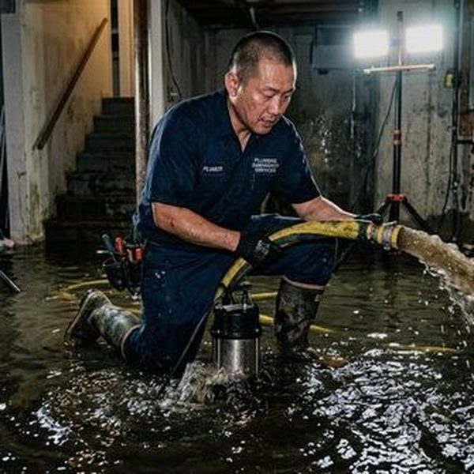
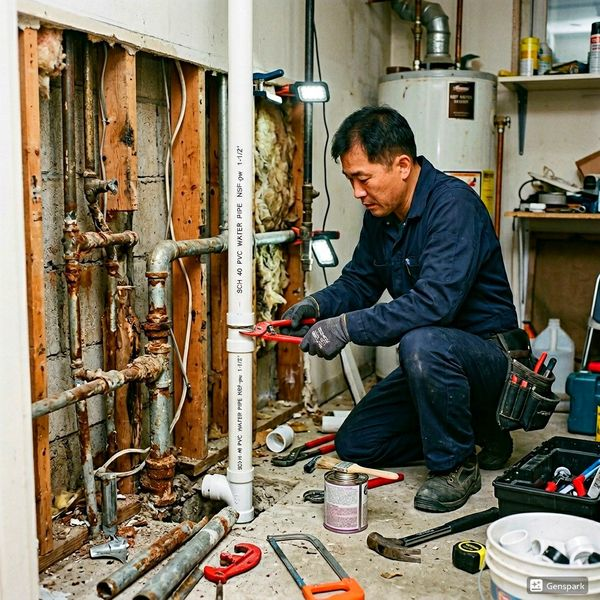
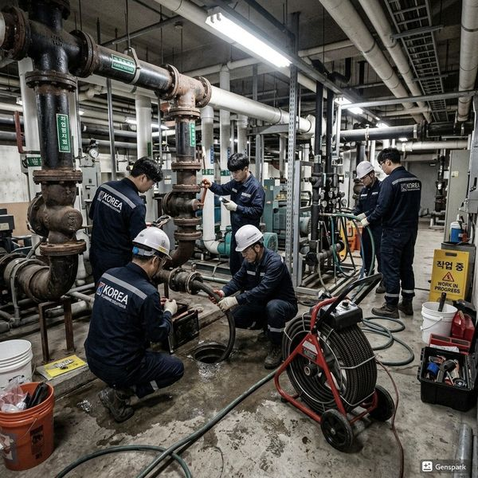

제우스시설관리 | 2025년 4월

장점: 오래된 전통 자재, 높은 내구성(수명 50년 이상), 항균성, 친환경적.
단점: 높은 가격, 산성 토양에서 부식 위험, 설치 기술 난이도 높음.
장점: 가장 저렴, 설치 용이, 화학 내성 우수, 공사 기간 단축.
단점: 온도 변화에 민감, 자외선에 약함, 일부 지역에서 금지.
장점: 유연성 우수, 설치 단순, 신축성으로 동파 위험 감소, 소음 적음.
단점: 중간 가격대, 자외선 노출 금지, 전문 인력 필요.
장점: 최고 내구성, 내식성 우수, 고급 외관, 온도 변화에 강함.
단점: 가장 높은 가격, 설치 어려움, 특수 도구 필요.
✅ 주택 온수 배관 - 구리 또는 PEX (내구성과 안전성 우선)
✅ 배수·오수 배관 - PVC 또는 HDPE (경제성, 설치 용이)
✅ 음식점 배관 - 스테인리스강 (위생성, 내식성)
✅ 지하실 배관 - PEX 또는 HDPE (습기 및 부식 대비)
건물 나이, 토양 산도, 물의 경도, 지역 법규, 장기 유지비용, 설치 가능 인력 등을 종합적으로 평가해야 합니다. 단순히 초기 비용이 아니라 수명주기 비용(LCC)을 고려하세요.
서로 다른 자재를 연결할 때는 반드시 호환 커넥터와 절연재를 사용해야 합니다. 갈바닉 부식을 방지하는 것이 중요합니다.
모든 배관 설치 후에는 일정 시간 보수 운전(설정 압력의 1.5배)을 실시하여 누수 여부를 확인해야 합니다.
배관 자재 선택은 건물의 장기 안정성을 결정하는 중요한 결정입니다. 전문가와 충분히 상담 후 최적의 자재를 선택하세요.

